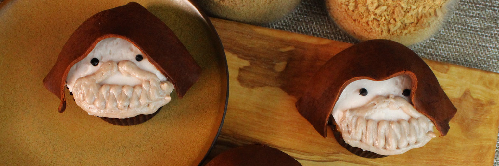
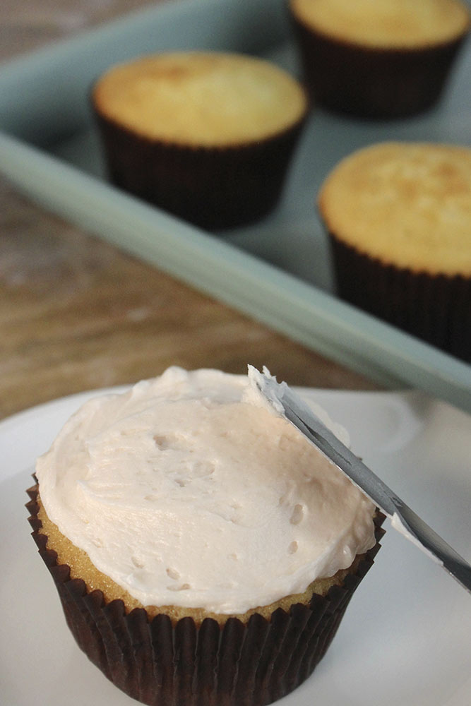
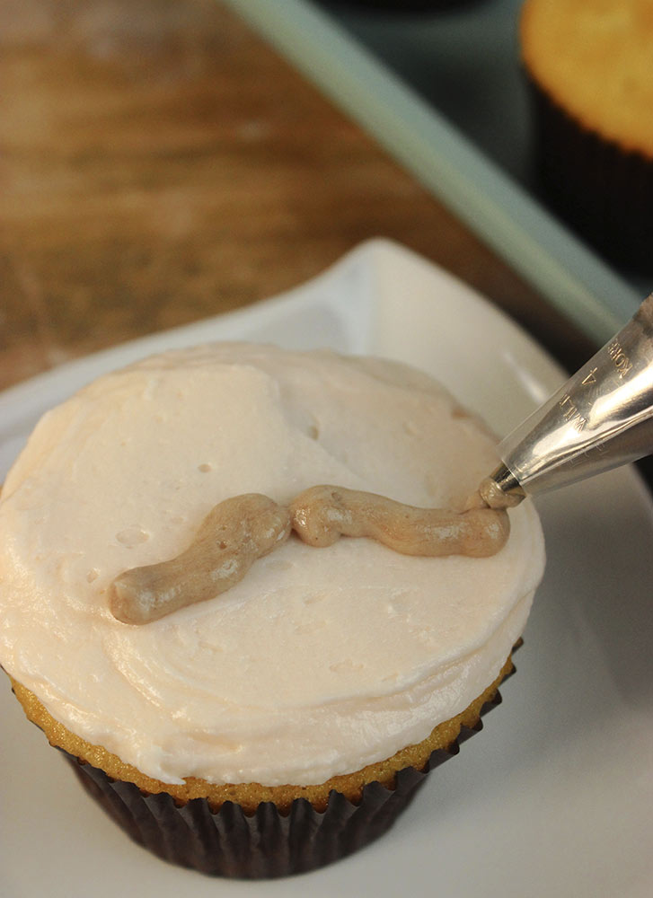
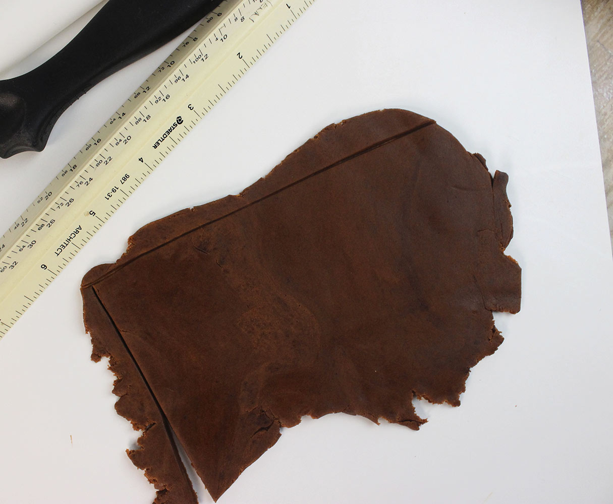
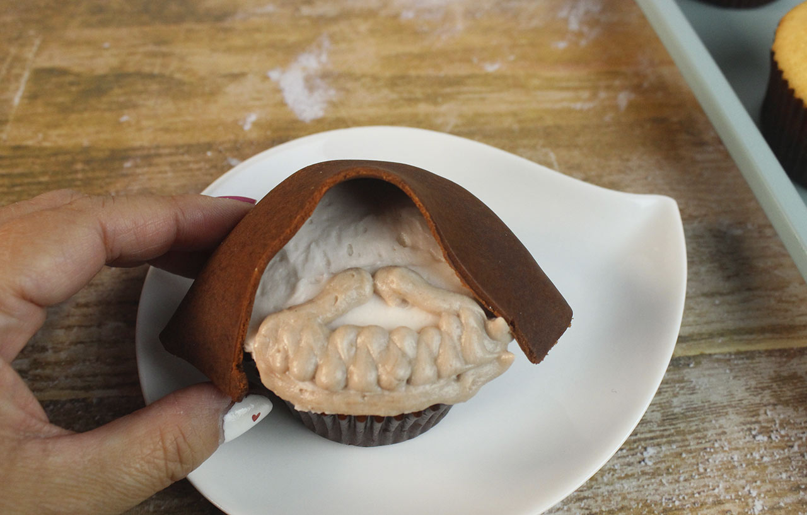
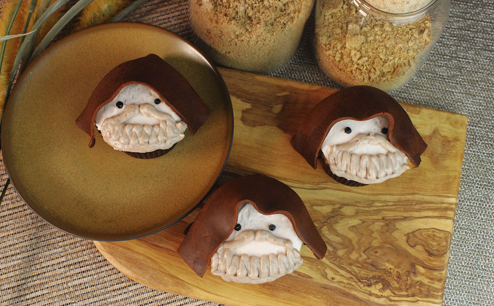

Potatoes

Description
Ingredients for the cupcake:
- 1-1/4 cups cake flour
- 1 Teaspoon baking powder
- 1 teaspoon cinnamon
- 1/4 teaspoon nutmeg
- 1/2 cup (1 stick) unsalted butter, softened
- 3/4 cups sugar
- 2 eggs
- 1-1/2 teaspoons vanilla
- 1/2 cup whole milk
Ingredients for the frosting:
- 3/4 cup (1-1/2 sticks) unsalted butter, softened
- 1 teaspoon vanilla
- 1/4 teaspoon salt
- 1/4 teaspoon salt
- 3 cups confectioners sugar
- 1/4 cup heavy whipping cream
- 1 teaspoon cocoa powder
- Pink food coloring
Ingredients for the decoration:
- black icing
- 16 ounces chocolate brown fondant
Steps:
- Preheat the oven to 350 degrees. Prep a cupcake pan with 12 liners.
- In a medium bowl, whisk together the cake flour, baking powder, cinnamon, nutmeg, and salt. Set aside
- In the bowl of an electric mixer cream the butter and sugar for two minutes, until fluffy. Add the eggs one at a time until incorporated, then stir in the vanilla.
- Alternate milk with the dry ingredients until just combined
- Spoon the batter evenly into the prepped liners. Bake for 15 minutes. Let cool on a wire rack.
- In a medium bowl with a handheld mixer, cream the butter, vanilla, and salt, until combined.
- Gradually add the confectioners sugar and heavy whipping cream for 1 to 2 minutes until light and airy.
- Remove 1 cup of frosting into a small bowl and stir in the cocoa powder. Place in a piping bag with a #5 tip. Set aside.

- To the remaining frosting, stir in a small amount of pink food coloring to tint the frosting to a light skin tone. Frost the cupcakes, using an offset spatula to level flat.

-
With the cocoa icing, pipe a mustache and beard onto the lower half of the cupcake. Use the black icing to add two eyes


-
Divide the fondant into 12 pieces. Roll out one piece and trim to a 5 x 3 inch rectangle. Drape around one cupcake to create the robe. Repeat with the rest of the fondant and cupcakes. Once all the cupcakes are complete, they’re ready to serve.

Return to main page